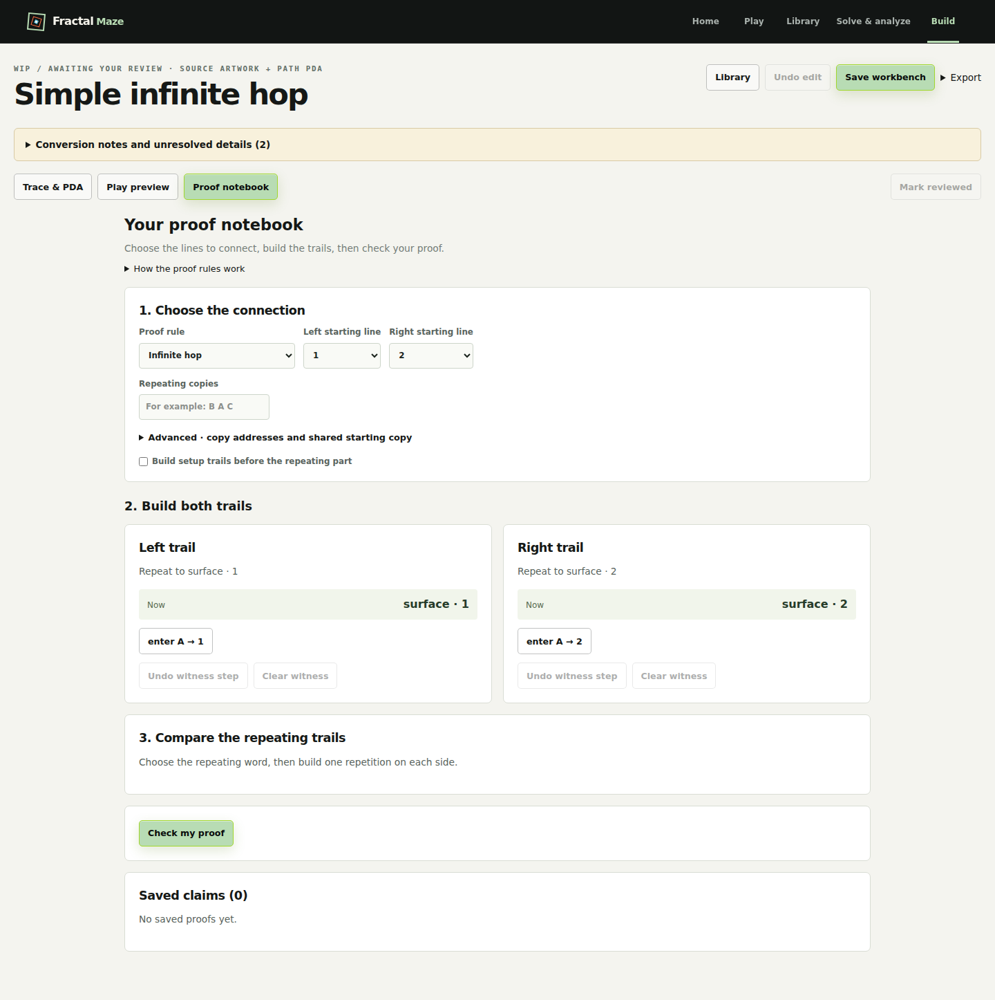
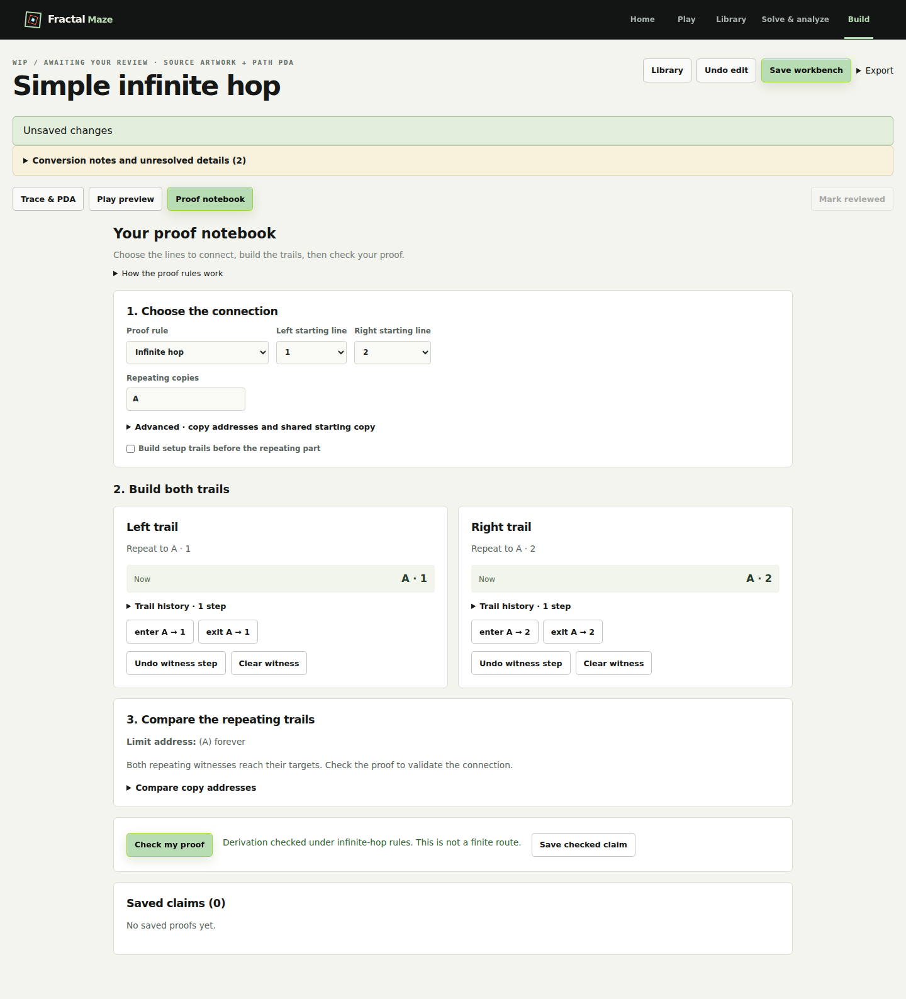
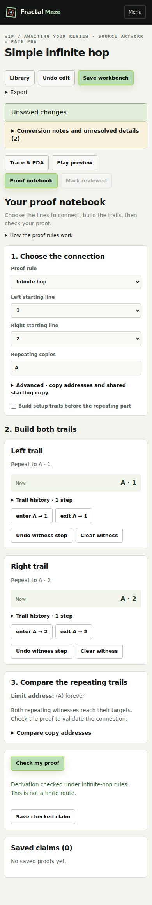
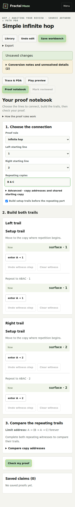
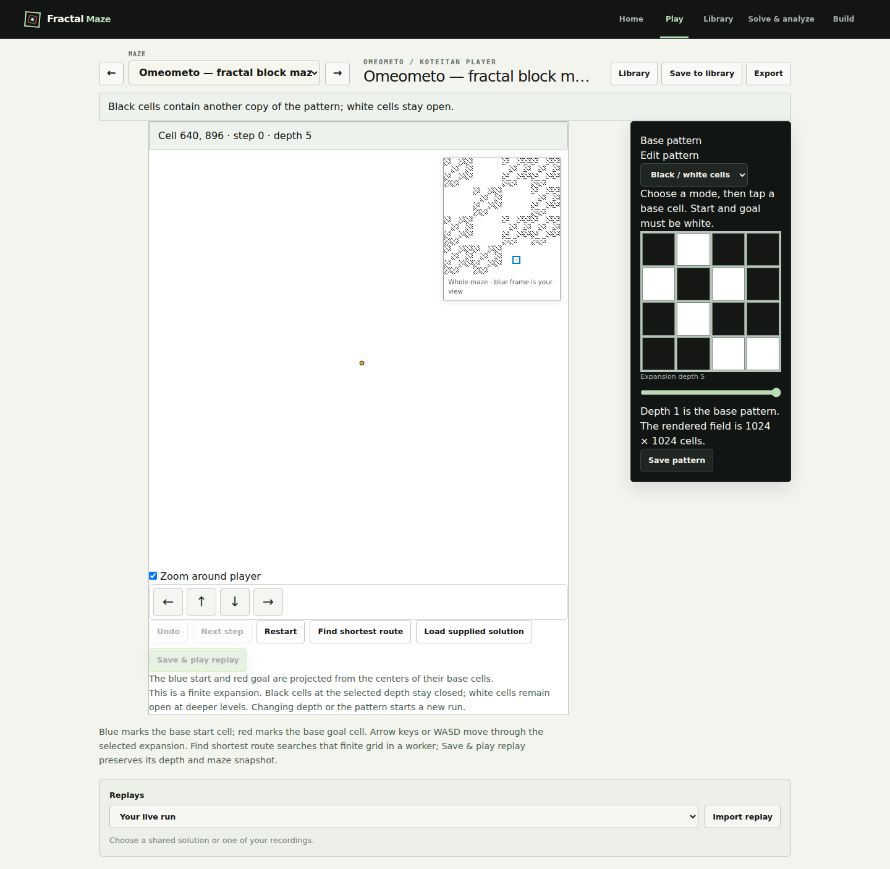

Proof and Play review
October 10, 2026. Source artwork stays in the tracing workspace. Proof construction focuses on the claim, trails and repeating word.
Proof — empty desktop

Proof — checked desktop

Proof — checked phone

Proof — setup trails on phone

Skeptic Play 1 SVG — depth two

Skeptic Play 1 SVG — phone

Omeometo — local view and whole-maze inset

Omeometo — phone